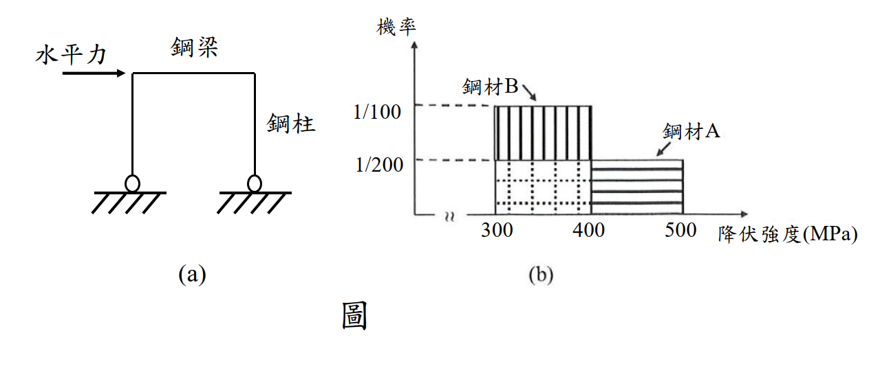

📄 題目正本：考卷原文・附圖・判讀清單（待確認）
SS-2022-4 題目正本
本檔只記錄考卷上寫了什麼、圖上畫了什麼，不含任何解法。解析見同資料夾
SS-2022-4.md。
判讀清單經使用者確認前，狀態為「待確認」；確認後本檔原則上不再修改（改動須回考卷原圖並記 log）。
| 項目 | 內容 |
|---|---|
| 考卷 | raw/exams/SS-2022_鋼結構設計.pdf 第 2 頁（頁次 2－2），第四題 |
| 考年 | 民國 111 年（2022） |
| 配分 | 25 分 |
| 附圖 | 1 張（(a) 門型構架、(b) 兩鋼材降伏強度分布），SS-2022-4-fig-1.png |
| 判讀狀態 | 待確認（轉錄 2026-11-03，PyMuPDF 110 dpi 全頁＋附圖 400 dpi 局部目視（附圖為 623×330 點陣圖）＋抽出文字核對，盲讀後才比對既有解析） |
1. 考卷原文（逐字）
四、設計考慮如圖(a)的鉸支承門型抗彎鋼構架受地震水平力作用時，鋼梁比鋼柱先降伏且在梁端形成塑鉸。為達上述「強柱弱梁」設計目標，選擇使鋼柱的塑性斷面模數為鋼梁的 1.25 倍。兩種鋼材的降伏強度分布如圖(b)所示。假設鋼梁與鋼柱的製作屬統計上之獨立事件。試分別針對鋼材 A 與鋼材 B，分析柱與梁使用同一種鋼材製作卻未達設計目標變「強梁弱柱」之機率，並說明限制鋼材降伏強度範圍的意義。（25 分）
2. 考卷給的公式、附表與參數
- 題文：$Z_{\text{柱}} = 1.25\,Z_{\text{梁}}$；梁、柱製作為統計獨立。
- 圖(b)：縱軸「機率」刻度 1/100、1/200；橫軸「降伏強度(MPa)」刻度 300、400、500。
- 卷首注意事項：㈠可以使用電子計算器；㈡不必抄題；㈢本科目除專門名詞或數理公式外，應使用本國文字作答。另卷首註：題目所列之計算公式僅供參考應自負確認與勘誤責任，另視設計需求可自行假設適用的條件等。
3. 附圖

圖面文字照錄：水平力；鋼梁；鋼柱；(a)；機率；鋼材B；鋼材A；1/100；1/200；300；400；500；降伏強度(MPa)；(b)；圖。
4. 判讀清單
「把握」標不確定者請優先確認；解讀類項目（題目用字的意思）另標「解讀」。
| # | 項目 | 判讀 | 圖上／題文依據 | 把握 |
|---|---|---|---|---|
| 1 | 鋼材 B 分布 | 300～400 MPa 均勻分布，縱軸值 1/100 | 圖(b) 直線陰影矩形（400 dpi） | 確定 |
| 2 | 鋼材 A 分布 | 300～500 MPa 均勻分布，縱軸值 1/200（300～400 段以點線格畫在 B 之下） | 點線格與水平陰影同高 1/200，A 標籤指 400～500 段 | 確定（解讀） |
| 3 | 縱軸意義 | 「機率」實為每 MPa 的機率密度（B：100×1/100 = 1；A：200×1/200 = 1） | 面積檢核 | 確定（解讀） |
| 4 | 失敗定義 | 「強梁弱柱」：柱的塑性彎矩小於梁（$1.25F_{y,\text{柱}} < F_{y,\text{梁}}$） | 題文 | 確定（解讀） |
| 5 | 同一鋼材 | 柱與梁皆用 A，或皆用 B，分別計算 | 題文「分別針對」 | 確定 |
| 6 | 圖(a) | 只是情境示意，無尺寸數值 | 圖 | 確定 |
轉錄：2026-11-03（SS-U2-2 題目正本推廣・批 1）
考題編號：SS-2022-4
主分類： SS-U2-2 鋼結構材料特性
副分類： 無
設計法： 概念題（含機率計算）
標籤： 耐震設計 強柱弱梁 容量設計 鋼材降伏強度 機率分析 均勻分布 SN耐震鋼材 降伏比 塑鉸 降伏強度範圍
1. 原始題目重述 (Problem Restatement)
設計考慮鉸支承門型抗彎鋼構架受地震水平力作用時，鋼梁比鋼柱先降伏且在梁端形成塑鉸。為達「強柱弱梁」設計目標，選擇使鋼柱的塑性斷面模數為鋼梁的 1.25 倍（$Z_{p,col} = 1.25 \, Z_{p,beam}$）。
兩種鋼材的降伏強度分布如圖所示：
圖說（依考卷原圖 500 dpi 目視判讀，2026-11-01 更正鋼材 B 範圍）：圖(a) 門型鉸支承構架：水平地震力作用於梁端，梁與柱剛性連接，柱底為鉸支承，塑鉸設計形成於梁端。圖(b) 降伏強度機率密度分布：X 軸 = 降伏強度（MPa），Y 軸 = 機率密度（per MPa）。鋼材A（水平線紋填充）：300~500 MPa 均勻分布，機率密度 = 1/200 per MPa；鋼材B（垂直線紋填充）：300~400 MPa 均勻分布，機率密度 = 1/100 per MPa（豎線區塊左緣對齊橫軸 300、右緣對齊 400）。兩者下限相同，鋼材B上限較低、變異範圍更窄（平均 350 vs 400 MPa）。
假設： 鋼梁與鋼柱的製作屬統計上之獨立事件。
試分別針對鋼材A與鋼材B，分析柱與梁使用同一種鋼材製作卻未達設計目標，變「強梁弱柱」之機率，並說明限制鋼材降伏強度範圍的意義。（25 分）
2. 考題核心精神與出題者意圖 (Core Concepts & Examiner's Intent)
核心觀念：設計採用的 Fy 是「名目值」，實際材料的 Fy 具有隨機性——降伏強度範圍越寬，強柱弱梁的設計目標越難在實際工況中實現
容量設計邏輯：
$$Z_{p,col} \times F_{y,col} > Z_{p,beam} \times F_{y,beam} \Longleftrightarrow \text{強柱弱梁}$$
設計上取 $Z_{p,col} = 1.25 \, Z_{p,beam}$，預期「柱的塑性彎矩強度 25% 大於梁」，理論上柱不會比梁先降伏。
問題所在： 設計假設梁柱同材且 $F_y$ 固定，但實際材料的 $F_y$ 是隨機變數。若梁的實際 $F_y$ 偏高、柱的實際 $F_y$ 偏低，則：
$$1.25 \times Z_{p,beam} \times F_{y,col,\text{actual}} < Z_{p,beam} \times F_{y,beam,\text{actual}}$$
強柱弱梁失敗，變成「強梁弱柱」（設計意外）。
出題者測驗重點：
1. 能建立強梁弱柱的數學條件
2. 能對連續型均勻分布作二重積分求機率
3. 能解釋「限制 Fy 範圍」（如 SN 耐震鋼材）在容量設計中的意義
3. 解題戰略地圖與陷阱分析 (Strategic Roadmap & Trap Analysis)
作戰計畫：
1. 建立「強梁弱柱」的判斷條件（不等式）
2. 讀出鋼材A、B的機率分布（均勻分布範圍）
3. 用雙重積分（幾何面積法）計算各自機率
4. 比較兩者差異，解釋 Fy 範圍的意義
關鍵陷阱：
⚠️ 陷阱1：條件是「發生強梁弱柱」，不是「不滿足強柱弱梁」
題目問「變成強梁弱柱的機率」，即：$F_{y,beam} > 1.25 \times F_{y,col}$（嚴格大於），概率計算時上積分即為此條件。⚠️ 陷阱2：忘記確認均勻分布的範圍對積分限的影響
積分需同時滿足：$x \in [\text{分布下限}, \text{上限}]$ AND $y \in [\text{分布下限}, \text{上限}]$，以及條件 $y > 1.25x$。三個條件一起決定積分區域。⚠️ 陷阱3：PDF × 面積 = 機率（均勻分布）
對均勻分布，$f(x) = 1/(\text{範圍長度})$，雙重積分結果 = $f_X \times f_Y \times$ 有效面積。
3.5 變數層次分析（Variable Hierarchy Analysis）
複習提示：解題後，在每個卡住的知識點「卡關?」欄標記
⚠；第二次複習時只看有⚠的項目。
最終目標： 計算使用同一種鋼材（A 或 B）製作柱梁時，發生「強梁弱柱」的機率（需雙重積分）
主要公式（$\boxed{\phantom{x}}$ = 未知，待推導）
強梁弱柱條件（發生的不良情況）：
$$M_{p,beam} > M_{p,col} \quad \Rightarrow F_{y,beam} Z_{p,beam} > F_{y,col} Z_{p,col}$$
因 $Z_{p,col} = 1.25 Z_{p,beam}$：
$$F_{y,beam} > 1.25 F_{y,col}$$
機率（雙重積分，均勻分布）
$$P = \int\int_{F_{y,beam} > 1.25 F_{y,col}} f(F_{y,col}) \cdot f(F_{y,beam}) \, dF_{y,col} \, dF_{y,beam}$$
L1：題目直接給定
| 符號 | 說明 |
|---|---|
| $Z_{p,col} = 1.25 Z_{p,beam}$ | 設計條件（柱塑模數 = 梁的 1.25 倍） |
| 鋼材 A | 均勻分布 $F_y \in [300, 500]$ MPa，$f(x) = 1/200$ |
| 鋼材 B | 均勻分布 $F_y \in [300, 400]$ MPa，$f(x) = 1/100$ |
| 獨立性假設 | 柱梁鋼材強度為統計獨立 |
L2：需知識點推導
Step 1：建立「強梁弱柱」不等式
| 符號 | 公式 | 卡關? |
|---|---|---|
| 強梁弱柱條件 | $F_{y,beam} > 1.25 F_{y,col}$（化簡後）⚠ 常見卡關 |
Step 2：鋼材 A 的機率（積分區域）
| 步驟 | 說明 | 卡關? |
|---|---|---|
| 積分範圍 | $x = F_{y,col} \in [300,500]$，$y = F_{y,beam} \in [300,500]$ | |
| 條件 | $y > 1.25x$（加上 $y \leq 500$） | |
| 幾何法 | 計算滿足條件的矩形面積（$200^2 = 40000$）分之積分面積 ⚠ |
Step 3：鋼材 B 的機率
| 步驟 | 說明 | 卡關? |
|---|---|---|
| 積分範圍 | $x \in [300,400]$，$y \in [300,400]$；有效區 $x \in [300,320]$ | |
| 條件 | $y > 1.25x$（加上邊界約束） | |
| 結果比較 | $P_B = 2.5\%$ < $P_A = 15.6\%$：B 的範圍更窄，機率更低 → SN 鋼材 Fy 範圍限制的意義 |
L3：深層知識（不懂就卡住）
| 知識點 | 說明 | 卡關? |
|---|---|---|
| 強梁弱柱條件 = $F_{y,beam} > 1.25 F_{y,col}$（化簡） | 由 $F_{y,b} Z_{p,b} > F_{y,c} \times 1.25 Z_{p,b}$ 約分後得此條件 | |
| 均勻分布獨立事件 → 雙重積分 = PDF × PDF × 面積 | $P = f_X \times f_Y \times \text{有效面積}$，幾何面積法最直覺 | |
| SN 鋼材 $F_y$ 範圍限制的意義 | 限制 $F_y$ 上限（降伏比限制）→ 縮小 $F_y$ 隨機性 → 降低「強梁弱柱」機率 | |
| 積分邊界需同時滿足三個條件 | $y > 1.25x$ AND $y \leq \text{上限}$ AND $x \geq \text{下限}$，三個不等式共同決定積分域 |
4. 步驟化詳細計算過程 (Step-by-Step Detailed Calculation)
一、建立「強梁弱柱」的數學條件
設計目標（強柱弱梁）成立的條件：
$$M_{p,col} > M_{p,beam}$$
$$\underbrace{Z_{p,col}}_{=1.25 Z_{p,beam}} \times F_{y,col} > Z_{p,beam} \times F_{y,beam}$$
$$1.25 \times F_{y,col} > F_{y,beam}$$
未達設計目標（強梁弱柱）的條件：
$$F_{y,beam} > 1.25 \times F_{y,col}$$
設：$X = F_{y,col}$（柱降伏強度，MPa），$Y = F_{y,beam}$（梁降伏強度，MPa）
$$P(\text{強梁弱柱}) = P(Y > 1.25X)$$
$X$ 與 $Y$ 相互獨立（製作獨立事件），且均服從相同鋼材的均勻分布。
二、鋼材A的分布（均勻分布 300~500 MPa）
$$f_A(x) = \frac{1}{500-300} = \frac{1}{200} \text{ per MPa}, \quad x \in [300, 500]$$
積分區域分析
條件：$Y > 1.25X$，且 $X \in [300,500]$，$Y \in [300,500]$
需 $1.25X < 500 \Rightarrow X < 400$（若 $X \geq 400$，則 $1.25X \geq 500$，$Y$ 無法大於 $1.25X$ 且仍在範圍內）
同時需 $1.25X > 300 \Rightarrow X > 240$（本範圍已滿足，因 $X \geq 300$）
因此：
$$x \in [300, 400], \quad y \in (1.25x, \;500)$$
計算有效面積
$$\text{Area}_A = \int_{300}^{400} (500 - 1.25x) \, dx$$
$$= \left[500x - \frac{1.25}{2}x^2\right]_{300}^{400} = \left[500x - 0.625x^2\right]_{300}^{400}$$
$$= (500 \times 400 - 0.625 \times 400^2) - (500 \times 300 - 0.625 \times 300^2)$$
$$= (200{,}000 - 100{,}000) - (150{,}000 - 56{,}250)$$
$$= 100{,}000 - 93{,}750 = 6{,}250 \text{ MPa}^2$$
計算機率
$$\boxed{P_A = f_A^2 \times \text{Area}_A = \left(\frac{1}{200}\right)^2 \times 6{,}250 = \frac{6{,}250}{40{,}000} = \frac{5}{32} = 15.6\%}$$
三、鋼材B的分布（均勻分布 300~400 MPa）
$$f_B(x) = \frac{1}{400-300} = \frac{1}{100} \text{ per MPa}, \quad x \in [300, 400]$$
積分區域分析
條件：$Y > 1.25X$，且 $X \in [300,400]$，$Y \in [300,400]$
需 $1.25X < 400 \Rightarrow X < 320$（若 $X \geq 320$，$1.25X \geq 400$，積分為零）
同時：$Y > 1.25X \geq 1.25 \times 300 = 375$（高於下限 300，自動滿足 $Y \geq 300$）
因此：
$$x \in [300, 320], \quad y \in (1.25x, \; 400)$$
計算有效面積
$$\text{Area}_B = \int_{300}^{320} (400 - 1.25x) \, dx = \left[400x - 0.625x^2\right]_{300}^{320}$$
$$= (128{,}000 - 64{,}000) - (120{,}000 - 56{,}250) = 64{,}000 - 63{,}750 = 250 \text{ MPa}^2$$
（幾何驗算：有效區為直角三角形，兩股長 $320 - 300 = 20$ 與 $400 - 375 = 25$，面積 $\tfrac{1}{2} \times 20 \times 25 = 250$ ✓；鋼材 A 同理為 $\tfrac{1}{2} \times 100 \times 125 = 6{,}250$ ✓）
計算機率
$$\boxed{P_B = f_B^2 \times \text{Area}_B = \left(\frac{1}{100}\right)^2 \times 250 = \frac{250}{10{,}000} = \frac{1}{40} = 2.5\%}$$
（數值積分複核：$P_A = 0.15625$、$P_B = 0.0250$ ✓）
四、機率比較
| 鋼材 | 降伏強度範圍 | 機率密度 | 強梁弱柱機率 |
|---|---|---|---|
| 鋼材A | 300~500 MPa（範圍 200 MPa） | 1/200 per MPa | 15.6%（5/32） |
| 鋼材B | 300~400 MPa（範圍 100 MPa） | 1/100 per MPa | 2.5%（1/40） |
$$\frac{P_A}{P_B} = \frac{15.6\%}{2.5\%} = 6.25 \text{ 倍}$$
鋼材A（降伏強度範圍較寬）發生「強梁弱柱」的機率是鋼材B（範圍較窄）的 6.25 倍。
五、限制鋼材降伏強度範圍的意義
數學層面：
對均勻分布，強梁弱柱機率正比於「有效面積」，有效面積與範圍寬度的平方成正比：
$$P \propto \frac{(\Delta F_y)^2}{(\Delta F_y)^2} \times [\text{有效積分面積}]$$
當範圍從 200 MPa 縮小為 100 MPa（縮小一半），機率從 15.6% 降至 2.5%（縮小 6.25 倍）。範圍縮短對降低機率的效果遠大於線性比例（本題下限相同、上限由 500 降為 400，有效三角形兩股各縮為 1/5，面積縮為 1/25，再除以樣本空間縮為 1/4，故為 1/6.25）。
工程層面：
-
容量設計的可靠性：容量設計（強柱弱梁、強接合弱桿件）的前提是設計強度能反映實際強度。若 $F_y$ 範圍過寬，設計假設的「梁比柱弱 25%」可能在實際中完全反轉，耗能機制失效。
-
SN 耐震鋼材的設計哲學：日本 SN（Structural Steel for New Building）系列鋼材設有降伏強度上限（例如 SN490B：$F_y = 325$ ~ $445$ MPa，範圍 120 MPa），目的就是控制實際 $F_y$ 不超過名目值太多，確保「預期塑化位置」真的是最弱的地方。台灣耐震設計規範亦規定耐震鋼材之降伏比 $F_y/F_u \leq 0.8$，以確保足夠的應變硬化空間。
-
「鋼材過強」也是風險：若梁的 $F_y$ 實際值遠高於設計值，不只是「未達強柱弱梁」，更可能造成預期彈性之構件（柱、接合）承受超出設計的力量而提前破壞。
$$\boxed{\text{限制降伏強度範圍} = \text{減少設計假設與實際行為的差距} = \text{提升容量設計可靠度}}$$
5. 關鍵爭議點與進階探討 (Critical Issues & Advanced Discussion)
為何門型鉸支承構架設 $Z_{p,col} = 1.25 Z_{p,beam}$？
規範中「強柱弱梁」的要求：
$$\sum M_{p,col}^* \geq 1.0 \sum M_{p,beam}^*$$
但為了考慮軸力對柱塑性彎矩強度的折減（$M_{pc} = Z_{p,c}(F_y - P_u/A_g)$）以及其他保守考量，規範通常要求柱的塑性強度比梁大 20-25%（各規範不同）。本題取 1.25 倍進行分析。
積分幾何的直觀解釋
可用「在單位正方形（$x$軸 = 梁降伏強度範圍，$y$軸 = 柱降伏強度範圍）中，直線 $y = 1.25x$ 以上的面積佔比」來理解：
對鋼材A，(x, y) 均在 [300,500]² 的 40,000 MPa² 正方形中隨機選取，$y > 1.25x$ 的有效面積只有 6,250 MPa²，佔 15.6%。
對鋼材B，正方形縮小為 [300,400]² 的 10,000 MPa²，且直線 $y=1.25x$ 在 $x=320$ 時已超出範圍，有效面積僅 250 MPa²，佔 2.5%。
考場答題注意事項
- 積分上下限是本題最容易出錯之處，需仔細確認 $x$ 和 $y$ 都在各自分布範圍內，且同時滿足 $y > 1.25x$
- 最後必須有「解釋降伏強度範圍意義」的文字段落，這部分約佔 8-10 分
- 計算過程中若使用分數（$5/32$、$1/160$）比小數更清晰，建議兩者都寫
6. 依最新規範（AISC 341-16／-22）對照
AISC 341 以期望降伏強度 $R_yF_y$ 計算梁端塑性彎矩（容量設計需求），強柱弱梁檢核 $\sum M^*_{pc}/\sum M^*_{pb} > 1.0$；$R_y$（A992 為 1.1、A36 為 1.5）即是對材料超強不確定性的統計補償。本題機率分析說明：降伏強度範圍越窄（如 SN 鋼設上限），$R_y$ 越能可靠地涵蓋實際超強。
修正日期：2026-11-01（依考卷原圖 500 dpi：圖(b) 鋼材 B 為 300~400 MPa 均勻分布，原解誤讀為 350~450。重算鋼材 B 有效區 $x \in [300, 320]$、面積 62.5 → 250 MPa²，$P_B$ 0.625% → 2.5%（1/40），$P_A/P_B$ 25 → 6.25 倍；$P_A$ = 15.6% 不變；以三角形幾何與數值積分雙路徑驗算；新增 §6 對照）
驗證狀態：unverified